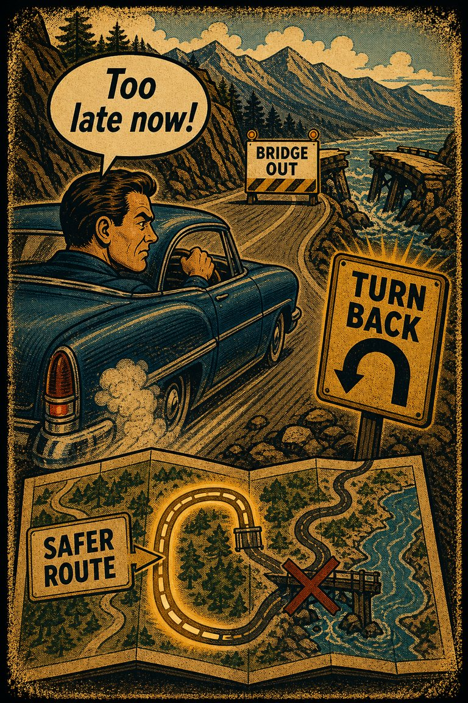
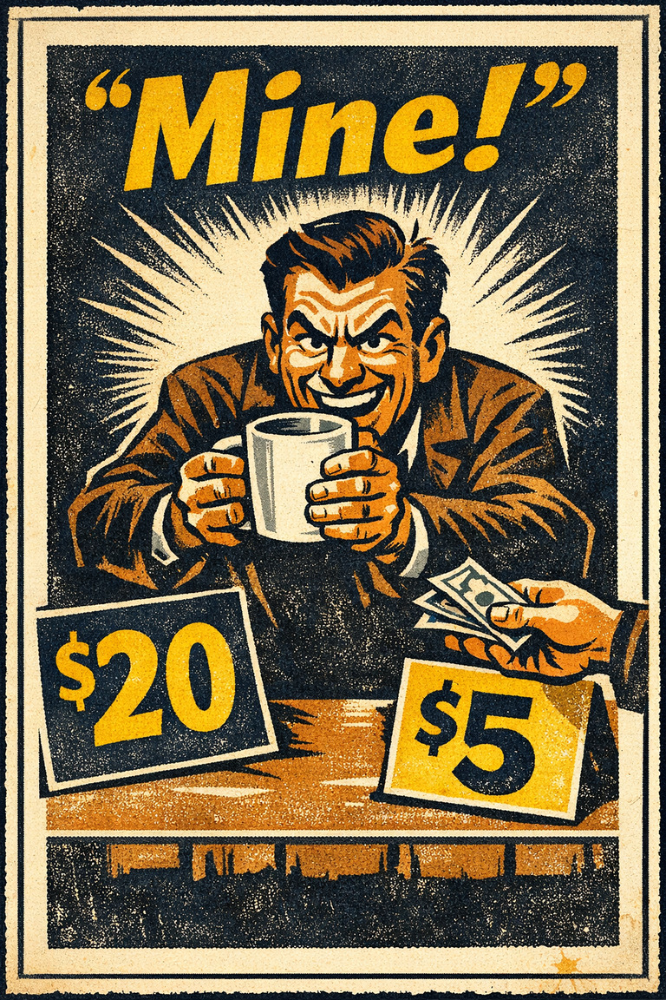
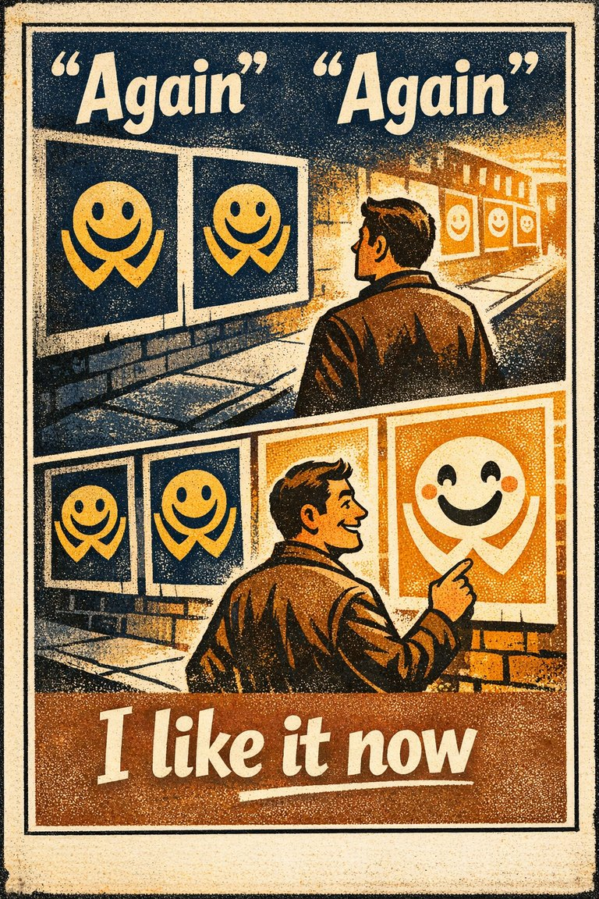
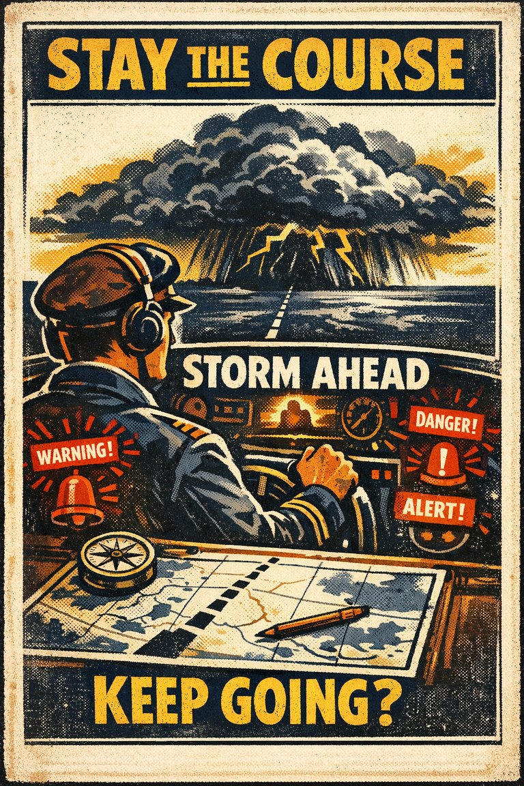
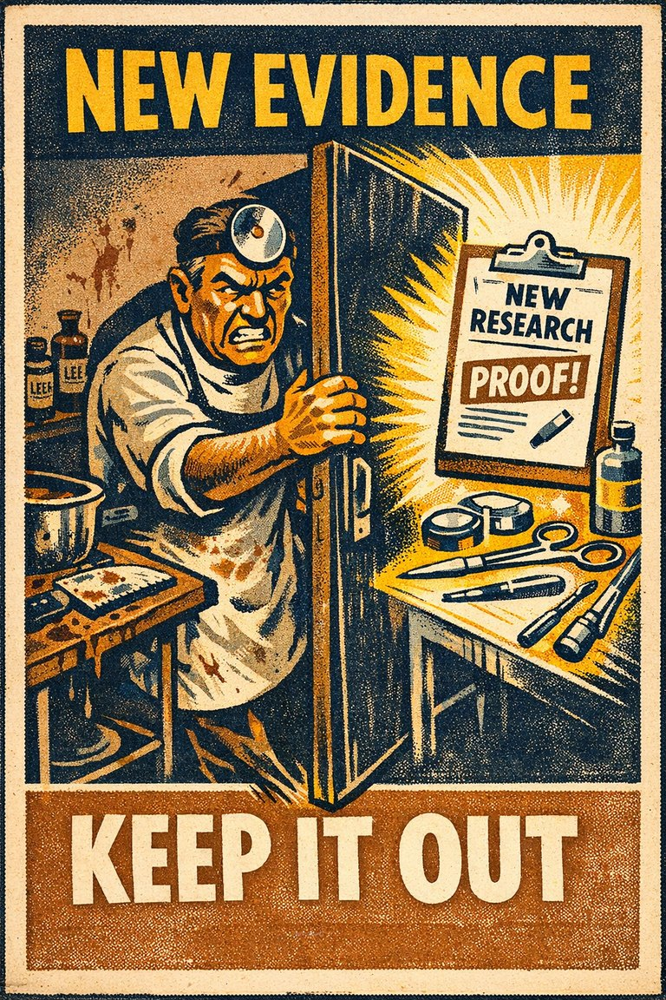
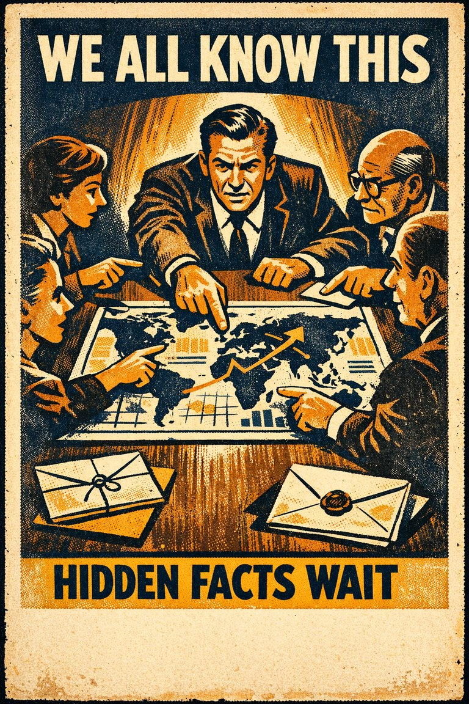

Everyday life
In everyday life, this often looks like people leaning on the easiest first interpretation when situations where decision is already difficult and the inertia cue feels easier to trust than a fuller review..

Cognitive Biases
A practical cognitive-bias site with clear definitions, learning paths, assessments, self-audits, and debiasing tools.
Cognitive Bias
A tendency limiting a person to using an object only in the way it is traditionally used
What it distorts
Biases that shape choices, commitments, avoidance, preference drift, and action under uncertainty.
Typical trigger
Situations where decision is already difficult and the inertia cue feels easier to trust than a fuller review.
First countermove
Start with the decision question instead of the first intuitive answer, then check whether the inertia pattern is doing invisible work.
Best use
Quick reference
What default, fear, sunk cost, or convenience cue is steering the choice more than the forward-looking case?
In decision problems, beliefs, habits, or commitments resist updating even when better movement is available before a fuller check catches up.
Use the quick check and reflection questions before locking the label. Nearby entries often share the same outer appearance while differing in what actually drives the distortion.
Each example changes the surface context while keeping the same hidden distortion in place.
In everyday life, this often looks like people leaning on the easiest first interpretation when situations where decision is already difficult and the inertia cue feels easier to trust than a fuller review..
At work, this often appears when teams treat the first coherent story as sufficient instead of slowing the process long enough to compare alternatives.
In public discourse, it often surfaces when commentators move too quickly from salience to conclusion while the underlying evidence remains thinner than it sounds.
The distortion usually feels like ordinary good judgment from the inside, which is why procedural repairs matter more than mere recognition.
Teaching note: Start with the decision problem, then show how the inertia pattern makes the distortion feel natural from the inside.
The strongest debiasing moves change the process, not just the label.
Start with the decision question instead of the first intuitive answer, then check whether the inertia pattern is doing invisible work.
Ask someone else to restate the case from a genuinely different starting point before committing.
Change the workflow so this distortion becomes harder to repeat by default next time.
Practice And Repair
Follow the moment where the bias first becomes attractive, then track how that attraction turns into a distorted judgment before jumping straight to the label.
Situations where decision is already difficult and the inertia cue feels easier to trust than a fuller review.
The first coherent reading starts to feel like ordinary good judgment from the inside.
Biases that shape choices, commitments, avoidance, preference drift, and action under uncertainty.
Start with the decision question instead of the first intuitive answer, then check whether the inertia pattern is doing invisible work.
What default, fear, sunk cost, or convenience cue is steering the choice more than the forward-looking case?
Spot It
Slow It
Reframe It
These are nearby labels that can share the same outer appearance while differing in what actually drives the distortion. Use the overlap, the distinction, and the diagnostic question together before settling the call.
Why compare it: A nearby label worth comparing before settling the diagnosis.
Why compare it: A nearby label worth comparing before settling the diagnosis.
Why compare it: A nearby label worth comparing before settling the diagnosis.
These are useful when the label seems roughly right but the process change still feels underspecified.
What default, fear, sunk cost, or convenience cue is steering the choice more than the forward-looking case?
What is staying in place mainly because movement is costly, awkward, or identity-threatening?
What evidence or comparison would most seriously change the current call?
These sourced cases come from closely related biases and help show the same kind of pressure while a direct case for this page catches up.
Classic sunk-cost ticket experiments
Experimental work found that people often persist more when they have paid more, even when the higher price should not change the value of the next unit of action.
Why it fits: The added prior cost changes commitment even though it does not improve the future payoff.
Related through: Sunk cost effect
1985
Inherited portfolio allocations stay sticky
Investors and institutions often preserve existing allocations longer than the forward-looking case justifies because reallocation feels like added responsibility.
Why it fits: The inherited setup is treated as safer than it really is simply because its risks have become normalized.
Related through: Status quo bias
Modern finance examples
These linked tools turn the page into practice instead of leaving it at the level of definition.
This bias does not yet have a dedicated path, but these nearby paths are usually the clearest place to see the same family of distortion in motion.
Nearby path
Use this path when the real pull seems to be preserving what is already in hand rather than comparing options cleanly.
Nearby path
Use this path before a major project, strategy choice, or resource commitment.
This bias does not yet have its own dedicated self-check, but these nearby audits usually catch the same kind of drift before it hardens.
Nearby audit
Am I choosing the best forward-looking option, or the most comfortable inherited one?
Nearby audit
Before You Treat The Default As Neutral
Is the default genuinely best, or just easiest to leave in place?
This bias is not yet the named center of its own kit, but it already appears in nearby workshop material that teaches the same pressure in context.
Nearby workshop
A facilitation kit for rooms where agreement, hierarchy, and speed may be replacing independent judgment.
Nearby workshop
Product Choice-Architecture Audit
A product and UX kit for testing whether defaults, decoys, metrics, and automation are helping users choose or quietly manufacturing preference.
There is no dedicated scenario for this bias yet, but these nearby cases test the same kind of pressure and repair move.
Nearby scenario
Everyone repeats the facts everyone already knows
A hiring committee spends most of its meeting on resume details already shared in the packet. Two members have unique reference-call concerns, but those concerns receive little ti…
Nearby scenario
It just feels more trustworthy now
A proposal begins winning support after people have seen the slogan and design treatment repeatedly for weeks, even though the substantive arguments have not improved much.
These neighbors were selected from shared categories, shared patterns, and explicit editorial links where available.

The tendency to resist restarting or retracing steps even when doing so would save time or effort.

The tendency to value something more highly once it is already owned, possessed, or treated as part of the current arrangement.

The tendency to like, trust, or feel more comfortable with something simply because it has become familiar.

Failure to recognize that the original plan of action is no longer appropriate for a changing situation or for a situation that is different from anticipated.

The tendency to reject new evidence that contradicts a paradigm.

The tendency for groups to spend too much time discussing shared information and too little on unique information.